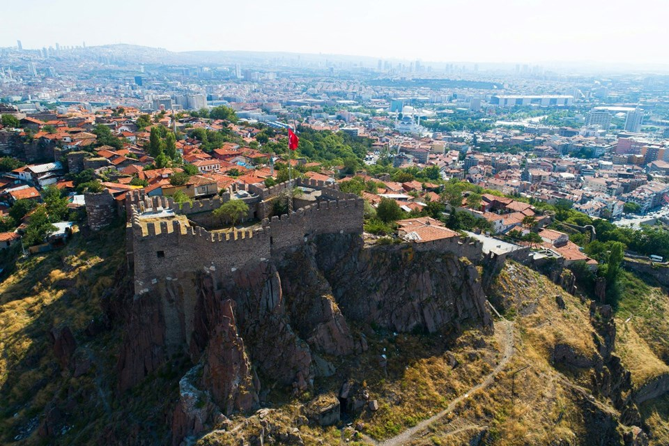

ANKARA
TARİHİ
Helenistik dönemde Galat boylarından Tektosag’ların başkenti olan Ankara, Roma döneminde taşra örgütünün başkenti, Bizans döneminde imparatorların konakladığı önemli bir kent, Osmanlı döneminde ise Anadolu Eyaleti’nin merkezi olmuştur.
İlk kuruluş tarihi kesin olarak bilinmemekle birlikte, kent çevresinde yapılan araştırmalarda bulunan tarih-öncesi izler, şehrin insanoğlunun yerleşik düzene geçtiği dönemlerde kurulduğunu göstermektedir.
Buluntular ve araştırmacıların yaptıkları incelemeler, Ankara’da Hititlerin, Friglerin, Lidyalıların ve Galatların yaşamış olduklarını göstermektedir. Şehrin yerleşik düzeni çok eskilere dayanmasına rağmen tarihi, ancak; Hitit devrinden itibaren takip edilebilmektedir.
Ankara’nın doğusunda bulunan Çorum ili sınırları içinde Boğazköy’de (Hattuşa) yapılan kazılarda, şehirle ilgili önemli ipuçları elde edilmiştir. Bir kısım yabancı tarihçilere göre Hitit eserlerinde sıkça rastlanan Ankuwa, muhtemelen bugünkü Ankara şehrinin bulunduğu yerdedir.
Hititlerden sonra yöreye Friglerin hakim oldukları görülmektedir. Eski çağ kaynaklarındaki bir efsaneye göre de Ankara’yı büyük Frig kralı Midas kurmuştur. Şehir merkezi Ulus’ta yapılan kazılarda, Friglerin oturduğuna dair kesin bilgiler elde edilmiştir. Frig devletinin yıkılmasında birinci derecede rol oynayan Kimmer istilasından sonra Ankara Lidyalıların eline geçmiştir. Fakat bu hakimiyet Pers kralı Kyros’un bütün Anadolu ile birlikte Ankara’yı da zapt etmesi üzerine çok çabuk sona ermiştir. Aradan iki asır geçtikten sonra Büyük İskender, Anadolu’daki Pers hakimiyetine son vermiştir.
İmparator Augustos’un Ankara’yı kesin olarak almasından sonra burası bir eyalet olarak gelişmiş, mabetler, pazaryerleri, yollar ve suyolları yapılmıştır.
Ankara 334–1073 yılları arasında Bizans İmparatorluğu’nun hakimiyeti altında kalmıştır. Bu süre zarfında da Hıristiyanlığın Anadolu’daki önemli bir merkezi olmuştur. VII. yüzyıldaki Sasani akınlarından sonra Araplar şehri bir süre ellerinde tutmuşlardır.
Ankara’nın kaderi Bizans ordularının Selçuklu Sultanı Alpaslan tarafından 1071 yılında mağlup edilmesiyle sonuçlanan Malazgirt Meydan Muharebesi ile tayin edilmiştir. Bu galibiyet sonucunda şehir Türklerin eline geçmiştir. Ankara’nın Türklerin eline geçmesi son derece önemlidir. Çünkü Ankara Kalesi askeri bakımdan önemli bir konumdaydı. Diğer taraftan, Ege liman kentlerinden başlayarak Mezopotamya ve diğer doğu ülkelerine kadar uzanan önemli yollar üzerinde bulunan bölge, aynı zamanda doğal kaynaklar açısından da zengindi.
Ankara’nın en parlak devri Alâaddin Keykubat zamanıdır. Bu dönemde şehir askeri bakımdan tahkim edilmiş, cami ve medrese gibi dini ve ilmi eserlerle de imar edilmiştir.
Selçuklu sultanı II. Gıyaseddin Keyhüsrev zamanında şehir Moğolların istilasına uğramış, tüm çabalara rağmen istilanın önüne geçilememiştir. Sultan Gıyasettin Keyhüsrev Moğol saldırıları karşısında Ankara Kalesine sığınmıştır. Moğol saldırıları sonunda Selçuklu devleti zayıf düşmüş ve bu durum Anadolu’nun İlhanlılar devletinin egemenliği altına girmesine kadar sürmüştür. Ankara bir süre İlhanlıların gönderdiği valilerin, sonra da Eretna oğullarının yönetimi altında kalmıştır. 1354 yılında Orhan Gazi’nin oğlu Süleyman Paşa, şehri Osmanlı ülkesine katmıştır. Yıldırım Beyazıt devrine kadar önemli bir olay olmamıştır. Ankara Savaşı’ndan sonra şehrin kaderi de değişmiştir. Timur Ankara’dan ayrıldığı sırada, Yıldırım Beyazıt’ın oğlu Mehmet Çelebi padişahlığını ilan etmiş ve böylece Ankara’yı da almıştır.
Kanuni Sultan Süleyman devrinde Anadolu’da bir eyalet örgütü kurulmuş ve Ankara bu Anadolu eyaletlerinden birinin merkezi olmuştur. Şehir 17. y.y. başlarında Celali Ayaklanması sırasında isyancıların eline düşmüştür. II. Mahmut’a isyan eden Mısır valisi Mehmet Ali Paşa’nın kısa bir zaman hakimiyetine giren Ankara, tekrar Osmanlıların eline geçmiş ve artık hiçbir istilaya uğramadan bir Osmanlı vilayeti olarak kalmıştır.
Balkan Savaşı sonunda Rumeli vilayetlerinin çoğunun kaybedilmesiyle, batıdaki Türk sınırları İstanbul’a çok yaklaşmıştı. İstanbul Boğazı’nın ele geçirilmesi de oldukça kolaylaşmıştı. Bu yüzden devlet merkezinin İstanbul’da kalması tehlikeli ve sakıncalı görülerek, başkentin Anadolu içinde başka bir şehre taşınılması düşünülmüştür. Savaş yıllarında en çok saldırı batıdan gelmekteydi ve Ankara bu saldırılara hayli uzak kalıyordu. 27 Aralık 1919 tarihinde, başta Mustafa Kemal Paşa olmak üzere “Anadolu ve Rumeli Müdafaa-i Hukuk Cemiyeti Heyeti Temsiliyesi” Ankara’ya gelerek 29 Aralık 1919’da yayımlanan bir tebliğ ile bütün mebuslara toplantının Ankara’da yapılacağını duyurmuştur. Bu genelgeden sonra 23 Nisan 1920 tarihinde kurulan Türkiye Büyük Millet Meclisi Hükümetinin merkezi Ankara olarak ilan edilmiştir. 13 Ekim 1923 tarihinde çıkarılan bir kanun ile Ankara, Türkiye Cumhuriyeti’nin başkenti olmuştur.
Başkent seçildiği yıllarda Ankara çok az sayıda binası olan küçük, yoksul ve çorak bir şehirdi. İstiklal Savaşımızın hazırlanıp sevk ve idare edildiği bir merkez olarak Milli Mücadelemizin sembolü haline gelen bu tarihi şehir, 29 Ekim 1923 tarihinde Türkiye Cumhuriyeti’nin ilanından sonra, giderek büyümüş, yepyeni, büyük ve modern bir görünüm kazanmıştır.
NÜFUSU
Ankara nüfusu bir önceki yıla göre 135.091 artmıştır.
Ankara nüfusu 2019 yılına göre 5.639.076'dir.
Bu nüfus, 2.793.850 erkek ve 2.845.226 kadından oluşmaktadır.
Yüzde olarak ise: %49,54 erkek, %50,46 kadındır.
ADININ KAYNAĞI
İlk bilgileri antik yazar Stephanos Byzantinos'dan öğrenmekteyiz. Yazar; kenti, Galatlar'ın kurduğundan bahsederek, ilk adının Grekçe ANKYPA, Latince ANCYRA olduğunu söyler. ANKYPA, Grekçe'de gemi çapası anlamına gelmektedir. Yazara göre kentin kurucuları olan Galatlar, Pontos Kralı Mithradates'in (MÖ 302-265) yanında, Mısır'da hüküm süren Ptolemaioslar'a karşı Karadeniz'de savaşmışlardır. Galat askerilerinin yardımı ile Ptolemaioslar'a galip gelen Mithradates, Galatlar'a hediye olarak, değerli topraklar ve savaşta ganimet olarak ele geçirilen bir gemi çapası hediye ederler. Galatlar kendilerine verilen Ankara ve çevresindeki topraklara yerleşir ve gemi çapasını da kurdukları kentteki Men Tapınağı'na hediye ederler.